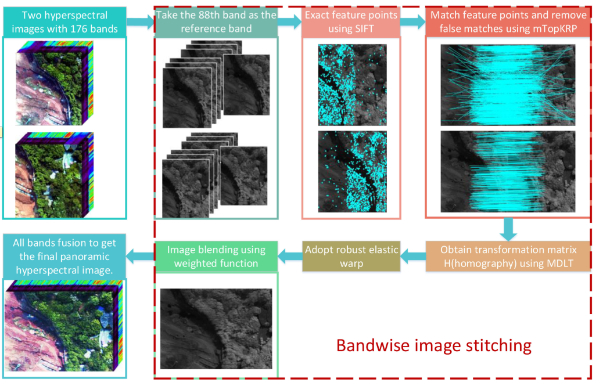

论文笔记-Automatic Stitching for Hyperspectral Images Using Robust Feature Matching and Elastic Warp

通常来说，单一的高光谱图像难以覆盖大的目标区域。因此需要对目标区域不同部分分别成像，而后使用图像拼接方法生成全景高光谱图像。
因此本文提出了一种高光谱图像自动拼接方法，该方法使用了鲁棒的特征匹配技术和弹性变形技术。
0. 基本信息
- 引用信息
Y. Zhang, Z. Wan, X. Jiang and X. Mei, "Automatic Stitching for Hyperspectral Images Using Robust Feature Matching and Elastic Warp," in IEEE Journal of Selected Topics in Applied Earth Observations and Remote Sensing, vol. 13, pp. 3145-3154, 2020, doi: 10.1109/JSTARS.2020.3001022.
- bib信息
1 | @article{Zhang2020, |
1. 研究目的
通常来说，单一的高光谱图像难以覆盖大的目标区域。因此需要对目标区域不同部分分别成像，而后使用图像拼接方法生成全景高光谱图像。
2. 研究内容
因此本文提出了一种高光谱图像自动拼接方法，该方法使用了鲁棒的特征匹配技术和弹性变形技术。
该方法分为两步 ：
选择某一波段作为参考波段生成单波段全景图像。
利用鲁棒的谈情变形技术获取剩余每个波段的全景图像
3. 总体流程

4. 方法总结
最终总结，本文方法融合了SIFT、mTopKRP、鲁棒弹性变形和光谱匹配技术。
其中mTopKRP方法是用来消除错误匹配的，该方法基于特征匹配结果的相邻拓扑关系具有稳定性这一特征。
鲁棒弹性变形方法则是用来降低图像畸变。